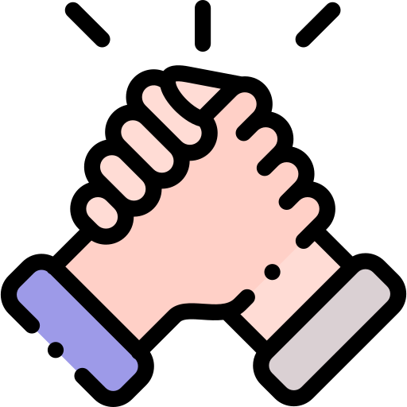

Wear sunscreen
If I could offer you only one tip for the future, sunscreen would be it.
The long term benefits of sunscreen have been proved by scientists, whereas the rest of my advice has no basis more reliable than my own meandering experience...
The long term benefits of sunscreen have been proved by scientists, whereas the rest of my advice has no basis more reliable than my own meandering experience...
I will dispense this advice now.
Enjoy the power and beauty of your youth.
Oh, never mind.
You will not understand the power and beauty of your youth until they have
faded.
But trust me, in 20 years you'll look back at photos of yourself and recall in a
way you can't grasp now
how much possibility lay before you and how fabulous you really looked.
You are NOT as fat as you imagine.
Don't worry about the future
or worry,
but know that worrying is as effective as trying to solve an algebra
equation by chewing bubblegum.

The real troubles in your life are apt to be things that never crossed your worried
mind;
the kind that blindside you at 4 pm on some idle Tuesday.
Do one thing every day that scares you.
SING
Don't be reckless with other people's hearts, don't put up with people who are
reckless with yours.
FLOSS
Don't waste your time on jealousy;
sometimes you're ahead,
sometimes you're behind.
sometimes you're ahead,
sometimes you're behind.
The race is long, and in the end,
it's only with yourself.

Remember compliments you receive, forget the insults;
if you succeed in doing this, tell me how.
Keep your old love letters,
throw away your old bank statements.

Stretch
Don't feel guilty if you don't know what you want to do with your life.
The most interesting people I know didn't know at 22 what they wanted to do with
their lives.
Some of the most interesting 40 year olds I know still don't.
Get plenty of calcium.
Be kind to your knees,
you'll miss them when they're gone.
you'll miss them when they're gone.
Maybe you'll marry,
maybe you won't,
maybe you won't,
maybe you'll have children,
maybe you won't,
maybe you won't,
maybe you'll divorce at 40,
maybe you'll dance the funky chicken on your 75th wedding anniversary.
Whatever you do, don't congratulate yourself too much or berate yourself, either.
Your choices are half chance, so are everybody else's.
Enjoy your body, use it every way you can.
Don't be afraid of it, or what other people think of it.
It's the greatest instrument you'll ever own.
DANCE
Even if you have nowhere to do it but in your own living room.
Read the directions, even if you don't follow them.
Do NOT read beauty magazines, they will only make you feel ugly.

Get to know your parents, you never know when they'll be gone for good.
Be nice to your siblings.
They are your best link to your past and the people most likely to stick
with you in the future.
Understand that friends come and go,
but for the precious few you should hold on.

Work hard to bridge the gaps in geography in lifestyle
because the older you get,
the more you need the people you knew when you were young.

Live in New York City once,
but leave before it makes you hard.
Live in Northern California once,
but leave before it makes you soft.
TRAVEL

Don't mess too much with your hair,
or by the time you're 40, it will look 85.
Be careful whose advice you buy, but be patient with those who supply it.
Advice is a form of nostalgia,
dispensing it is a way of fishing the past from the disposal,
wiping it off, painting over the ugly parts
and recycling it for more than it's worth.
dispensing it is a way of fishing the past from the disposal,
wiping it off, painting over the ugly parts
and recycling it for more than it's worth.
But trust me on the sunscreen.